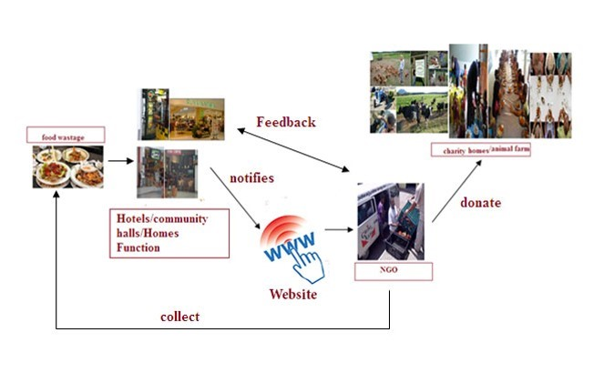

Stop Hunger Now
Stop Hunger Now
Across the world, there are restaurants that waste tons of excess food everyday. Weddings, canteens, hotels, social and family functions, households spew out so much food. So, we would like to create a website to establish a link between restaurants and the charity homes/needy households to enable excess food donation. We can also create a 'goodwill' points system for restaurants to get rewarded for such a noble deed which they can use for their own marketing efforts by being a responsible social business as well.
What We Do